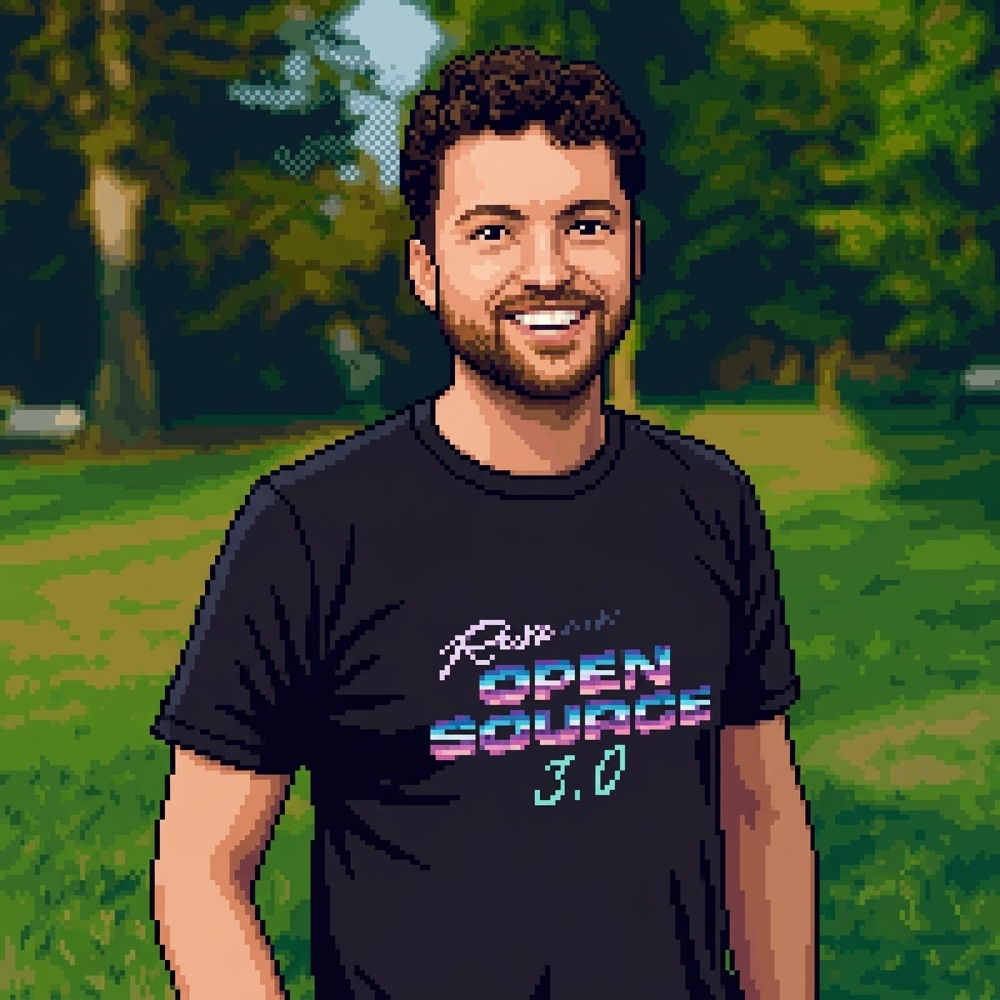

Remotion video generation
Encodes design rules for programmatic video: focal point, layout modes, safe areas, text treatment, easing, and timed animation.

ALAN NICHOL RASA REMOTION VIDEO-AS-CODEAlan uses Claude and Remotion to generate videos as code, then checks the rendered video rather than reading every line of generated code. The skill gives Claude rules for animation, layout, text treatment, timing, and visual inspection.
Alan's Remotion skill captures the rules he wants Claude to follow when generating video: animation style, layout modes, text treatment, safe areas, easing, and audio timing.
He does not need to inspect every line of Remotion code. He renders the video, checks frames and layout, and steers the next pass from the visible output.
Encodes design rules for programmatic video: focal point, layout modes, safe areas, text treatment, easing, and timed animation.
An in-progress skill for re-cutting horizontal videos into short vertical clips with subtitles, jump cuts, and overlays.
Start with vague taste words, watch Claude translate them into implementation vocabulary, then fold that vocabulary back into the skill.
Have the agent render frames throughout the video, inspect composition, and revise against visible output rather than instructions alone.